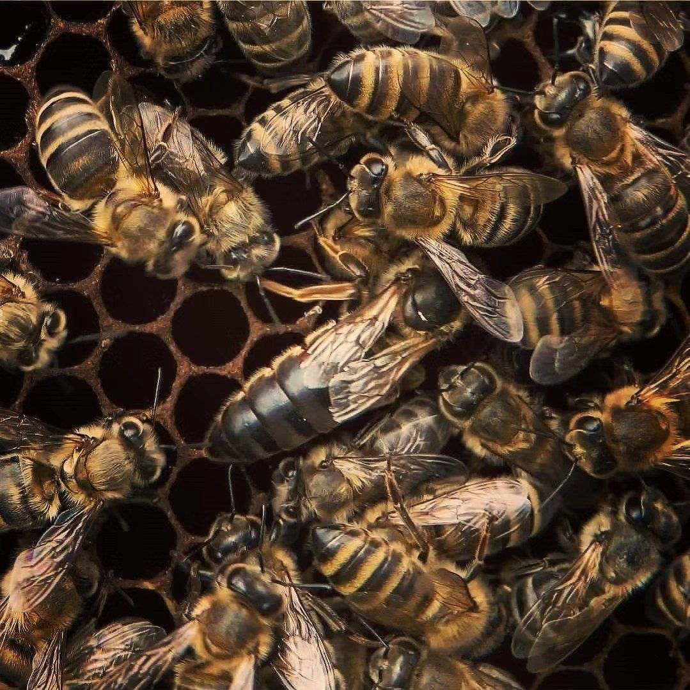

Одна пчелиная семья — это матка, тысячи рабочих пчёл и летом трутни. Матка откладывает яйца, а рабочие пчёлы делят обязанности: кормят личинок, строят соты, охраняют леток и носят нектар и пыльцу.
Пчела приносит в улей нектар, другие пчёлы передают его друг другу и крыльями выгоняют лишнюю воду. Когда мёд готов, его запечатывают воском.
Собирая нектар и пыльцу, пчёлы опыляют растения. От насекомых-опылителей зависит урожай многих садовых и полевых культур, а также дикие цветы, которые потом дают семена и плоды. Поэтому пчёлы важны не только ради мёда.
Зимой пчёлы собираются в тесный клубок и греют друг друга, а весной семья снова растёт. Поэтому осенью пасечник готовит ульи к холодам.